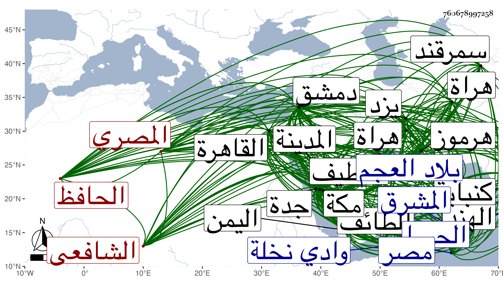

0902Sakhawi.DawLamic.ITO20230111-ara1.EIS1600.760678997258
Biography ID: 760678997258
765
خليل بن محمد بن محمد بن عبد الرحيم بن عبد الرحمن الحافظ غرس الدين وصلاح الدين أبو الصفا وأبو الحرم وأبو سعيد الاقفهسي المصري الشافعي ويعرف بالأشقر وبالأقفهسي . ولد في سنة ثلاث وستين وسبعمائة تقريبا . ونشأ فحفظ القرآن واشتغل بالفقه قليلا وكذا اشتغل بالفرائض والحساب والأدب وجلس مع الشهود وقتا ثم أحب الحديث قبيل التسعين وتوجه لطلبه حتى سمع الكثير من الكتب والأجزاء بقراءته وقراءة غيره بالقاهرة ومصر على خلق كثيرين كعزيز الدين المليجي وصلاح الدين البلبيسي وتقي الدين بن حاتم والشهاب المنفر والصلاح الزفتاوي وأبي الفرج بن الشيخة والتاج الصردي والشمس المطرز ومريم الأذرعية . ثم حج في سنة خمس وتسعين وجاور فسمع بمكة من شيوخها كابن صديق وابن سكر . وكان عسرا في التحديث فلم يزل يتلطف به حتى سهله الله له . وكذا سمع بالمدينة من جماعة ثم قدم دمشق في سنة سبع وتسعين فأدرك بها الشهاب أحمد ابن العز وأبا هريرة بن الذهبي فأكثر عنهما وعن غيرهما ، وسمع الكثير من حديث السلفي بالسماع المتصل وبالاجازة الواحدة ثم قدم القاهرة سنة ثمان وتسعين فسمع بها الكثير أيضا مرافقا لشيخنا وغيره . وسافر صحبة شيخنا إلى مكة في البحر فطلع هو من جدة وتوجه شيخنا إلى اليمن فجاور سنة ثمانمائة وأقام بها التي تليها لنذر كان نذره وهو إن ملك ألف درهم فضة أن يجاور سنة . فلما لقيه شيخنا في الحج سنة ثمانمائة أخذ له من الشهاب المحلي التاجر ألف درهم فضة فلما قبضها أعلمني بنذره وجاور ثم رحل إلى دمشق مرة ثانية فأقام بها وقدم عليه شيخنا فرافقه في سنة اثنتين وثمانمائة ورجع معه إلى القاهرة ثم حج في سنة أربع وجاور سنة خمس فلقيه شيخنا في آخرها مستمرا على ما يعهده من الخير والعبادة والتخريج والافادة وحسن الخلق وخدمة الاصحاب وخرج وهو بها للحافظ الجمال بن ظهيرة معجما وبالقاهرة للمجد إسماعيل الحنفي مشيخة واستمر مجاورا بها من تلك السنة نحو سبع سنين متوالية غير أنه كان زار المدينة من مكة ثلاث مرار وزار الطائف مرة ولما حج في سنة إحدى عشرة توجه مع قافلة عقيل إلى الحسا والقطيف لالزام بعض أصحابه له بذلك وركب البحر إلى كنباية من الهند ثم رجع إلى هرموز ثم جال في بلاد المشرق فدخل هراة وسمرقند وغيرهما وصار يرسل كتبه إلى مكة بالتشوق إليها وإلى أهله وخرج الكثير لنفسه وغيره سوى ما تقدم فمما خرجه لنفسه المتباينات قال شيخنا في أنبائه فبلغت مائة حديث ، وقال في معجمه أنه رام إكمالها مائة فرأيت بخطه تسعين وأحاديث الفقهاء الشافعية ، ومما خرجه لغيره ما عمله للزين أبي الفرج بن الشيخة وهو أربعون حديثا من مسموعه في الأدعية والأذكار سماها شعار الأبرار ولست الفقهاء ابنة أخي الحافظ عماد الدين بن كثير أربعين حديثا عن أربعين صحابيا عن أربعين شيخا من شيوخ مشايخ الأئمة الستة عن أربعين شيخا أجازوا لها ، وحدث كل منهما بذلك ونظم الشعر الوسط ثم جاد شعره في الغربة وطارح شيخنا مرارا بعدة مقاطيع وتخرج به جماعة كابن موسى والتقي بن فهد ، وحدث باليسير ، قال التقي الفاسي : انه صار يتردد من هرموز إلى بلاد العجم للتجارة وحصل دنيا قليلة ثم ذهبت منه ولم يتكسب مثلها حتى مات قال وكان ماهرا في معرفة المتأخرين والمرويات والعوالي مع بصارة في المتقدمين ومشاركة في الفقه والعربية ومعرفة حسنة للفرائض والحساب والشعر ، وله نظم كثير حسن وتخاريج حسنة مفيدة لنفسه ولغير واحد من شيوخه وأقرانه ، قال وكان حسن القراءة والكتابة والأخلاق ذا مروءة كبيرة وديانة وقد تبصر في الحديث كثيرا بالزين العراقي وبولده الولي وبالحافظ الهيثمي وبمذاكرة الحذاق من الطلبة والنظر في التعاليق والكتب حتى صار مشهور الفضل وسمعته يذكر أنه سمع حديث السلفي متصلا بالسماع على عشرة أنفس وحديث الحجار على أزيد من أربعين نفرا من أصحابه ولم يتفق لنا مثل ذلك ، سمعت عليه بقراءة صاحبنا الحافظ ابن حجر شيئا يرويه من حديث السلفي متصلا مما قرأه الحافظ على مريم بإجازتها من الواني شيخ شيخه وشيئا من حديث الفخر بن البخاري بإجازته العامة للموجودين بدمشق من ابن أميلة وكان بها حين الاجازة وذلك بقرية المبارك من وادي نخلة الشامية وسمعت منه أشياء من شعره لا تحضرني الآن وقرأ علي بعض تواليفي في تاريخ مكة وكثر أسفنا على فراقه ثم موته ، وكان موته في آخر سنة عشرين ظنا غالبا بيزد من بلاد العجم في مسلخ الحمام عقب خروجه من الحمام قال وبلغنا نعيه بمكة في موسم سنة إحدى وعشرين ، ووصفه شيخنا في معجمه بالمحدث المفيد الحافظ قال وله تعاليق وفوائد وما زال منذ طلب في ازدياد وهو أمثل رفقتنا مطلقا وقد انتفعت بثبته وأجزائه وقال انه سمع من لفظه جزءا من حديث الاسواري عن حكايات الصقلي بسماعه له على أحمد بن أيوب بن المنفر أنابه الواني وهو الذي أشار إليه الفاسي ، وأرخ وفاته فجأة في ذي الحجة سنة عشرين ووصل الخبر بها في التي يليها فأرخه بعضهم فيها وهو عند الفاسي وفي عقود المقريزي .
